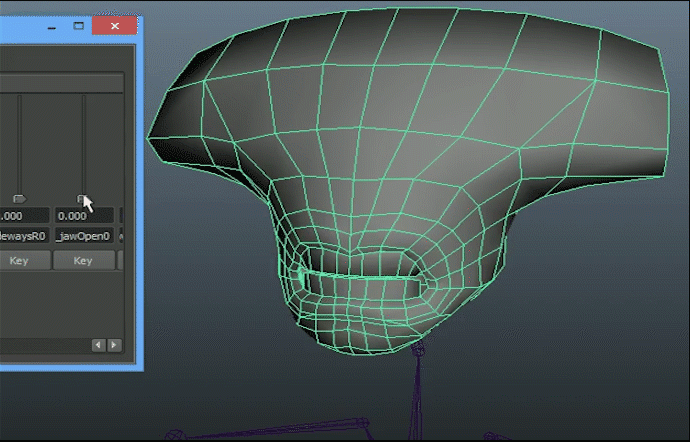
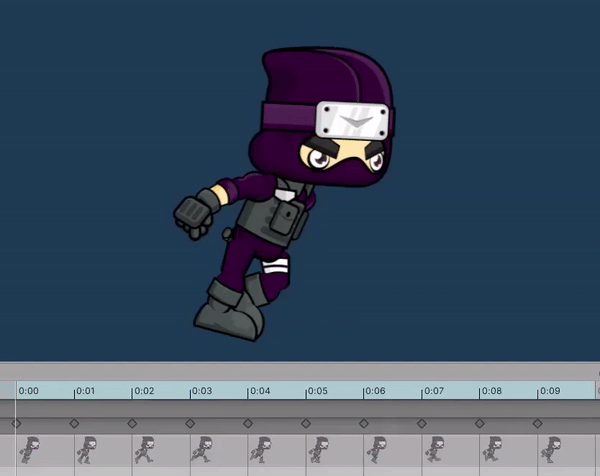

Animation
Are we recording?
Review
What are bounding volumes?
- Simple shapes containing a mesh or a 2D image used for calculating collisions
- Offer better performance than using raw meshes for collisions
Review
What is a Rigidbody?
- A component which allows a GameObject to be affected by physics based on its colliders
- Adds physical properties like mass and drag
Review
What is a Raycast?
- A ray that is fired from an origin in some direction
- Gives information about the first collider it hits
- Incredibly useful (gun shots, AI, line of sight...)
Types of animation
- Skeletal Animation
- Blend Shapes (Morph Targets)
- Traditional (Sprite Sheet) Animation
Skeletal Animation
The character is split into:
- A mesh/skin
- Used to draw the character
- A set of bones and joints
- Used to animate the character
- The latter is also called a skeleton/animation rig/armature
Skeleton Rig Example
Bone Parenting
/
Forward Kinematics (FK)
Bones can be parented. Bones down the parenting chain are affected by those above. For example if the shoulder bone moves -> the hand bones will move as well.
Bone Weights
Each bone affects the vertices around it according to a specified weight

Inverse Kinematics (IK)
How much a bone down the chain affects bones up the chain.
Keyframes
Snapshots of the skeleton in the extreme positions of the animation. In-between frames are done by interpolationg between keyframes. This is called inbetweening or just tweening.
Skeletal Animation Example

JK :D
Actual Example
Blend Shapes
- Also a type of keyframe animation
- Keyframes are not snapshots of a skeleton but deformations of the base mesh
- More expensive than skeletal animation
- Generally used for elements that require detailed animation like the human face
Blend Shapes Example
Sprites
Before we talk about sprite sheet animation we need to talk about sprites.
Sprites in computer graphics are 2D images that are integrated into a larger scene.
In Unity they are implemented with the Sprite Renderer component.
Sprites Sheets
- Sprites that contains other smaller sprites
- Improve performance (locality)
Image Import Settings
- Texture Type: Default -> Sprite
- Sprite Mode: Single -> Multiple
- For Sprite Sheets
- Filter Mode: Bilinear -> Point
- For Pixel Art
Sprite Editor
- Breaks up the Sprite Sheet into individual Sprites
- Individual sprites are defined by:
- x and y offset
- width and height
- Unity can slice the sprite sheet for you automatically
The Sprite Renderer Component
- Draws an image with Texture Type: Sprite
- Allows for color tint
- Sorting Layers allow for sprites to be properly drawn one over the other
- Sprites in a higher Sorting Layer are drawn over Sprites in a lower Sorting Layer
- Sprites with a higher Order in Layer are drawn over Sprites with a lower sorting layer
Z Sorting
- An alternative to Sorting Layers
- Utilizes that the engine is 3D
- Sprites with a higher transform.z value are drawn over Sprites with a lower value
Sprite Sheet Animation Example
Animation in Unity
- Select the GameObject that you want to animate
- Open the Animation window in
Window/Animation/Animation - Click "Create". This will:
- Create an Animation Clip
- Create an Animation Controller
- Add the Animator Component to your GameObject
Animation Clip
- Collection of keyframes
- Keyframes are snapshots of the properties of the GameObjects and its children
- Controlled in the Dopesheet menu
- Collection of inteprolating curves(splines)
- Controlled in the Curves menu
- Can have events happen on particular frames of the animation
Animation Clip Live Demo
Animator
- A window showing the animation controller which is finite state automaton that controlls the transition between animation clips
-
Open by double clicking the created .controller file or go to
Window/Animation/Animator
Animator Preview
Animator Parameters
- Help control the animation state
- Can be bool, float, int, trigger
Animation Transitions
- Change the current animation clip based on some condition
- Exit Time
- The exact time at which the change will occur
- Transiton Duration
- How long the transition will take
Animation Transitions Preview
Blend Trees
Blend between animations to get a new one
Animator Live Demo
Animator in Code
Animator animator = GetComponent<Animator>();
animator.SetBool( "ParameterName", true);
animator.SetFloat( "ParameterName", 1f);
animator.SetInteger("ParameterName", 1);
animator.SetTrigger("ParameterName");
Important!
Update in scripts happens before the animator update. This means that changes in the animator will override changes in script. To overcome this we should use proper GameObject heirarchies and animate the children.